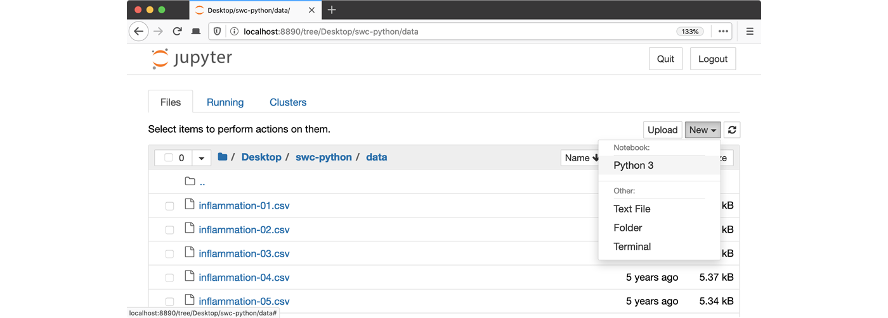

Summary and Schedule
This lesson provides an introduction to some of the common methods and terminologies used in machine learning research. We cover areas such as data preparation and resampling, model building, and model evaluation.
It is a prerequisite for the other lessons in the machine learning curriculum. In later lessons we explore tree-based models for prediction, neural networks for image classification, and responsible machine learning.
Predicting the outcome of critical care patients
Critical care units are home to sophisticated monitoring systems, helping carers to support the lives of the sickest patients within a hospital. These monitoring systems produce large volumes of data that could be used to improve patient care.
Our goal will be to predict the outcome of critical care patients using physiological data available on the first day of admission to the intensive care unit. These predictions could be used for resource planning or to assist with family discussions.
The dataset used in this lesson was extracted from the eICU Collaborative Research Database, a publicly available dataset comprising deidentified physiological data collected from critically ill patients.
Prerequisites
You need to understand the basics of Python before tackling this lesson. The lesson sometimes references Jupyter Notebook although you can use any Python interpreter mentioned in the Setup section below.
| Setup Instructions | Download files required for the lesson | |
| Duration: 00h 00m | 1. Introduction |
What is machine learning? What is the relationship between machine learning, AI, and statistics? What is meant by supervised learning? |
| Duration: 00h 30m | 2. Data preparation |
Why are some common steps in data preparation? What is SQL and why is it often needed? What do we partition data at the start of a project? What is the purpose of setting a random state when partitioning? Should we impute missing values before or after partitioning? |
| Duration: 01h 00m | 3. Learning |
How do machines learn? How can machine learning help us to make predictions? Why is it important to be able to quantify the error in our models? What is an example of a loss function? |
| Duration: 01h 30m | 4. Modelling |
Broadly speaking, when talking about regression and classification, how
does the prediction target differ? Would linear regression be most useful for a regression or classification task? How about logistic regression? |
| Duration: 02h 10m | 5. Validation |
What is meant by model accuracy? What is the purpose of a validation set? What are two types of cross validation? What is overfitting? |
| Duration: 02h 40m | 6. Evaluation |
What kind of values go into a confusion matrix? What do the letters AUROC stand for? Does an AUROC of 0.5 indicate our predictions were good, bad, or average? In the context of evaluating performance of a classifier, what is TP? |
| Duration: 03h 10m | 7. Bootstrapping |
Why do we ‘boot up’ computers? How is bootstrapping commonly used in machine learning? |
| Duration: 03h 40m | 8. Data leakage |
What are common types of data leakage? How does data leakage occur? What are the implications of data leakage? |
| Duration: 04h 10m | Finish |
The actual schedule may vary slightly depending on the topics and exercises chosen by the instructor.
Setup
This lesson is designed to be run on a personal computer. All of the software and data used in this lesson are freely available online, and instructions on how to obtain them are provided below.
Install Python
In this lesson, we will be using Python 3 with some of its most popular scientific libraries. Although one can install a plain-vanilla Python and all required libraries by hand, we recommend installing Anaconda, a Python distribution that comes with everything we need for the lesson. Detailed installation instructions for various operating systems can be found on The Carpentries template website for workshops and in Anaconda documentation.
Obtain lesson materials
- Download eicu_cohort.csv.
- Create a folder called
carpentries-ml-introon your Desktop. - Move downloaded files to
carpentries-ml-intro.
Launch Python interface
To start working with Python, we need to launch a program that will interpret and execute our Python commands. Below we list several options. If you don’t have a preference, proceed with the top option in the list that is available on your machine. Otherwise, you may use any interface you like.
Option A: Jupyter Notebook
A Jupyter Notebook provides a browser-based interface for working with Python. If you installed Anaconda, you can launch a notebook in two ways:
- Launch Anaconda Navigator. It might ask you if you’d like to send
anonymized usage information to Anaconda developers:
 Make your choice and click “Ok,
and don’t show again” button.
Make your choice and click “Ok,
and don’t show again” button. - Find the “Notebook” tab and click on the “Launch” button:
 Anaconda will open a new
browser window or tab with a Notebook Dashboard showing you the contents
of your Home (or User) folder.
Anaconda will open a new
browser window or tab with a Notebook Dashboard showing you the contents
of your Home (or User) folder. - Navigate to the
datadirectory by clicking on the directory names leading to it:Desktop,swc-python, thendata:
- Launch the notebook by clicking on the “New” button and then selecting “Python 3”: 
Here the setup depends if you are using a Unix shell (Terminal or Console in macOS and Linux, or Git Bash on Windows) or the Windows Command Prompt.
- Unix shell
Navigate to the data directory:
If you’re using a Unix shell application, such as Terminal app in macOS, Console or Terminal in Linux, or Git Bash on Windows, execute the following command:
Then, execute this command to start the Jupyter server:
- Command Prompt (Windows)
Navigate to the data directory: On Windows, you can use
its native Command Prompt program. The easiest way to start it up is
pressing Windows Logo Key + R, entering cmd, and hitting
Return. In the Command Prompt, use the following command to navigate to
the data folder:
cd /D %userprofile%\Desktop\swc-python\dataThen, execute this command to start the Jupyter server:
python -m notebookLaunch the notebook by clicking on the “New” button on the right and
selecting “Python 3” from the drop-down menu: 
Option B: Cloud Notebook
Colaboratory, or “Colab”, is a cloud service that allows you to run a Jupyter-like Notebook in a web browser. To open a notebook, visit the Colaboratory website. You can upload your datasets using the “Files” panel on the left side of the page.